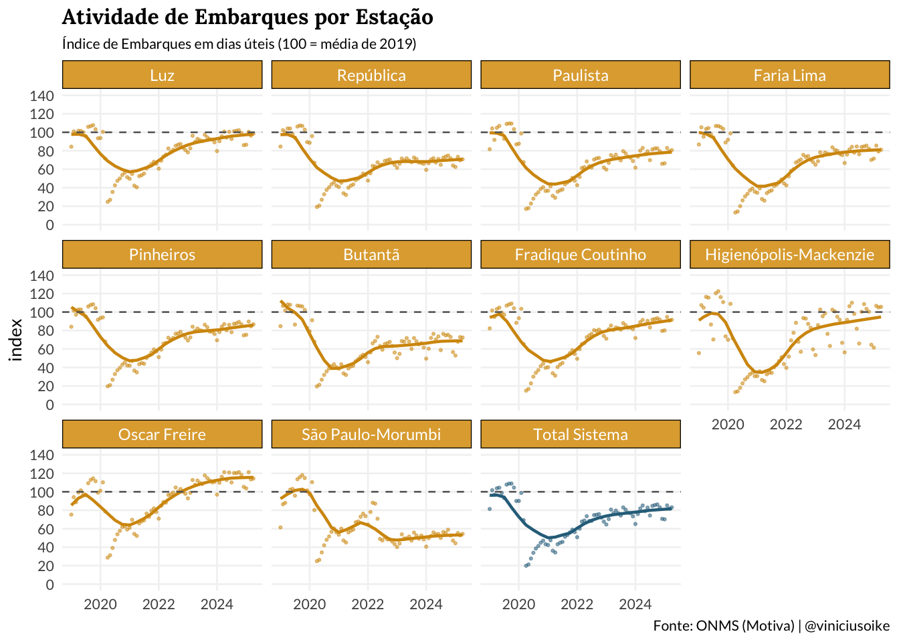
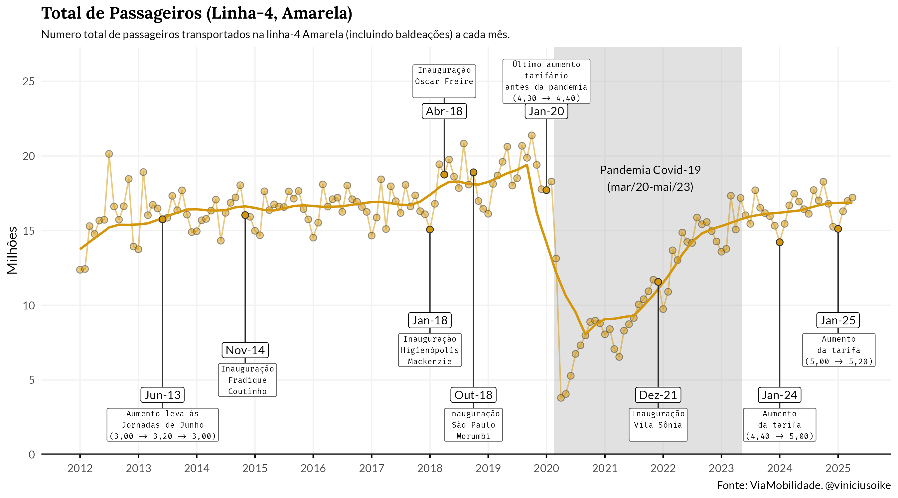
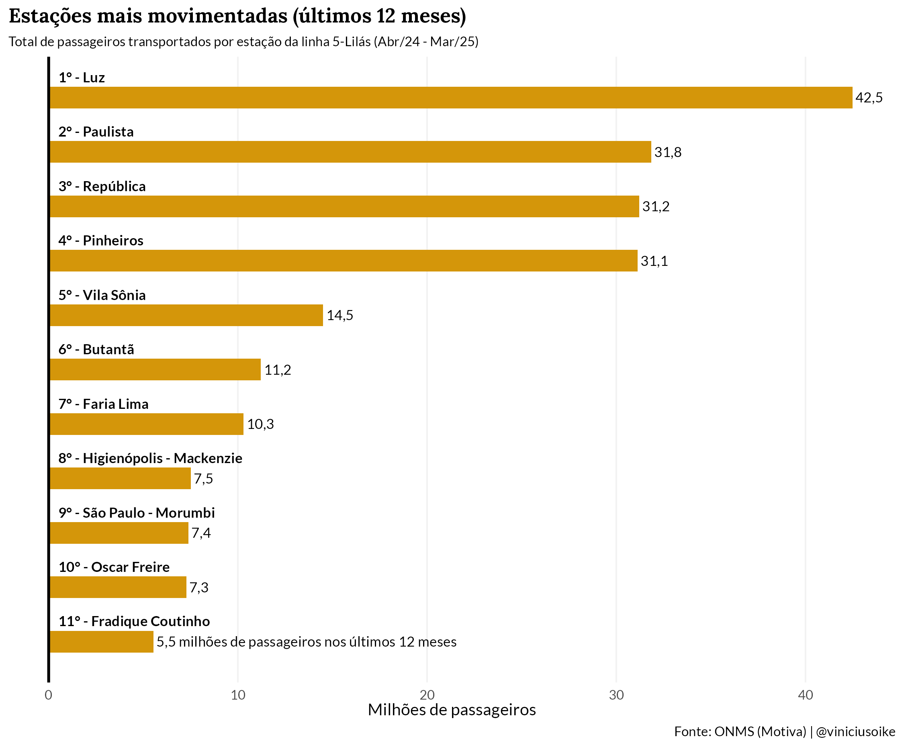
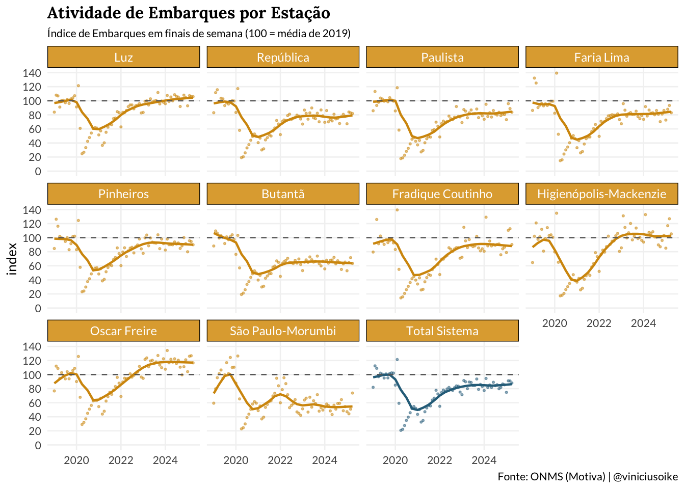
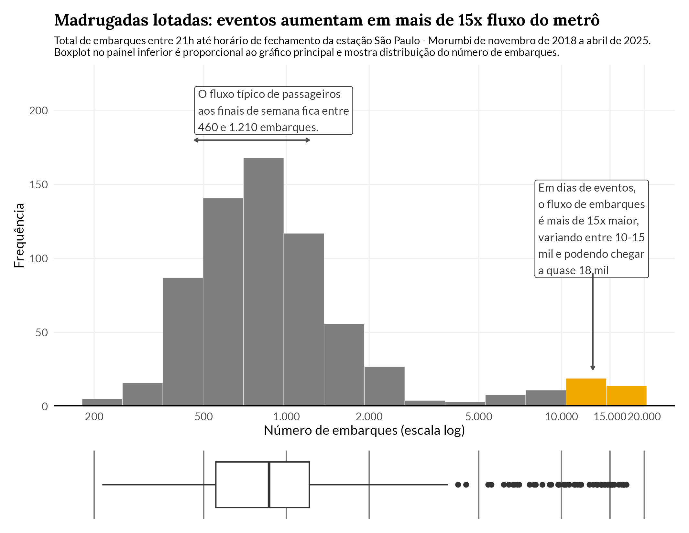

Linha 4-Amarela do Metrô
A demanda da Linha 4-Amarela não retornou ao patamar pré-pandêmico: o sistema opera cerca de 18% abaixo da média de 2019 em dias úteis e 14% abaixo nos finais de semana.
A recuperação é desigual entre estações: Oscar Freire superou o nível de 2019, enquanto Butantã e São Paulo-Morumbi operam a ~60–65%.
Luz concentra maior volume (42,5M passageiros/ano), confirmando seu papel central como hub de integração.
Eventos no MorumBIS multiplicam por mais de 15x o fluxo noturno na estação São Paulo-Morumbi, exigindo planejamento operacional específico.
Análise
Overview
O gráfico abaixo mostra a evolução mensal do total de passageiros transportados na Linha 4-Amarela. A linha sólida indica a tendência estimada da série, desconsiderando efeitos sazonais e outliers.

A série mostra o número total de passageiros transportados na Linha 4-Amarela desde a sua inauguração. Parte significativa do crescimento observado entre 2012 e 2018 se deve ao amadurecimento da operação e à inauguração de novas estações: Fradique Coutinho (nov/2014), Higienópolis-Mackenzie (jan/2018), Oscar Freire (abr/2018) e São Paulo-Morumbi (out/2018)1.
A pandemia reduziu a demanda para menos de 5 milhões de passageiros mensais — cerca de um quarto do patamar observado nos meses de jan/fev de 2020. A recuperação pós-pandemia parece ter se estabilizado num nível inferior ao pré-pandêmico, mesmo com a inauguração da estação Vila Sônia em dezembro de 2021: a média dos últimos doze meses (mai/24–abr/25) está cerca de 12,5% abaixo da média de 2019. A despeito dos recentes aumentos tarifários, a queda pode refletir mudanças de comportamento e migrações para o trabalho híbrido e remoto.
Estações mais movimentadas (últimos 12 meses)
Luz lidera com ampla margem: 42,5 milhões de passageiros nos últimos 12 meses, cerca de 34% a mais que a segunda colocada. Isso reflete seu papel como principal hub de conexão com a linha vermelha do Metrô e a CPTM. Paulista, República e Pinheiros formam um segundo grupo bastante equilibrado, cada uma com aproximadamente 31 milhões. A partir da quinta posição (Vila Sônia) todas as demais são estações “simples” sem integrações, então reportam fluxo menor de passageiros.

Dias de semana
O gráfico abaixo normaliza as séries pela média mensal de 2019, mostrando a recuperação do fluxo de passageiros em dias úteis e finais de semana. O painel abaixo detalha a evolução do índice de embarques por estação.

O índice de embarques em dias úteis revela uma recuperação desigual entre as estações. Oscar Freire é a única que superou o patamar pré-pandêmico, atingindo um índice próximo de 115 antes de recuar. Na outra ponta, Butantã e São Paulo-Morumbi são as estações com maior déficit, operando em torno de 60–65% do nível de 2019. As estações centrais (Luz, República, Paulista) apresentam recuperação parcial, estabilizadas entre 70% e 80%. Pinheiros também não recuperou totalmente. No agregado do sistema, a tendência aponta estabilização em torno de 80-82% do patamar pré-pandêmico.
A recuperação nos finais de semana segue padrão semelhante ao dos dias úteis, porém em patamar ligeiramente superior. Estações como Luz, Faria Lima e Higienópolis-Mackenzie se aproximam ou tangenciam a linha de 100. Oscar Freire novamente se destaca, tendo ultrapassado o nível pré-pandêmico com folga. Butantã e São Paulo-Morumbi permanecem como as estações mais defasadas, com índices entre 55% e 65%. O total do sistema nos finais de semana se estabiliza em torno de 84-86% da média de 2019, patamar superior ao dos dias úteis (~82%), reforçando impacto do trabalho híbrido e remoto sobre a demanda.
Fluxos de final de semana
A estação São Paulo-Morumbi apresenta um padrão atípico nos finais de semana: em dias de shows e jogos no estádio MorumBIS, o fluxo noturno de embarques pode ser mais de 15 vezes maior que o habitual.

O gráfico interativo abaixo mostra os 20 eventos que mais movimentaram a estação (embarques entre 21h e o fechamento).
Mapa da Linha
O mapa abaixo mostra o trajeto da Linha 4-Amarela, incluindo as futuras estações, com o fluxo diário médio nos dias úteis e nos finais de semana.
Dados: ViaQuatro
Tipografia: Fira Code e Fira Sans
Paleta:
"#e6bb3e"
Footnotes
Que a inauguração de tantas estações coincidam com anos eleitorais (2014, 2018) é mera coincidência.↩︎